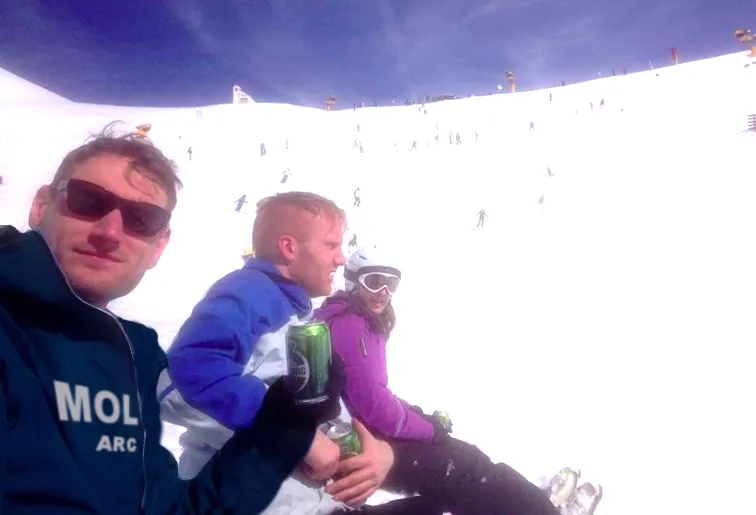
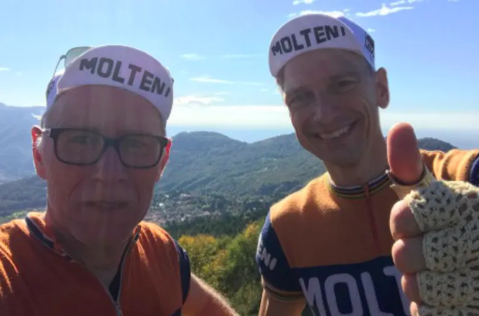

Optakt til Ronde van Borum

På søndag stiller Squadra Molteni til start ved den danske forårsklassiker Ronde van Borum. Løbet er en hyldest til cykelklassikeren Ronde van Vlaanderen og forårsklassikerne generelt. Men det er også et omgangsløb på 10 småkuperede omgange af 7,4 km.
Ny kaptajn
Squadra Molteni stiller med 5 af de formstærkeste klassikerryttere, og der er lagt op til festfyrværkeri fra starten.
– Vi er spændt op til lir’. Det har være en lang vinter, og vi har uro i benene, og det ved vi jo alle hvad betyder: Der vil blive stukket i øst og vest, udtaler en selvsikker holdkaptajn, Kasper Sørensen.
Kaptajn? Ja, Kasper Sørensen, der normalt kører som løjtnanten med det helt store overblik, har fået startnummeret 211. Det betyder, at Kasper kører Ronde van Borum som kaptajn for Squadra Molteni.


– Kasper har trænet helt afsindigt i vinterhalvåret. Han har brugt træningsmetoder, som vi ikke kan afsløre her, da det kan skade vores renommé. Man han har svedt liter efter liter – og senest har han været på højdetræningslejr i Alperne for at få fyldt på af røde blodlegemer, fortæller Niels Bjørnsteen
Den sjællandske duo
Holdets dynamiske duo Langergaard & Blume, der i sensommeren smadrede alt og alle i den italienske klassiker Il Lombardia, har fået til opgave at beskytte Kaptajn Sørensen de første 5 omgange.


– Langergaard & Blume, har kørt stort set alle sjællandske landeveje, og specielt grusveje, tynde gennem hele vinteren, og de nok de stærkeste dieselmotorer på holdet pt. Derfor har jeg givet dem til opgave, at beskytte vores nye kaptajn, inden han selv stikke på én af stigningerne i finalen, afslører Capitaine de Route, Niels Bjørnsteen
Squdra Molteni stiler til start med Kasper Sørensen, Niels Bjørnsteen, Jens Langergaard, Kristian Blume og Svend Seegert. Med sig har holdet Directeur de Sportif Klaus M. Kjærsgaard og Directeur de Mechanical Grane Maaløe.

– Det er ikke kun på landevejen løbet skal vindes. Det er fra følgebilen, at de store beslutninger skal tages – og ikke mindst de klistrede dunke skal gives, fortæller Kjærsgaard.
Ronde van Borum køres søndag 1. april, med stak kl. 10.00 ved Skivholme Forsamlingshus vest for Aarhus.